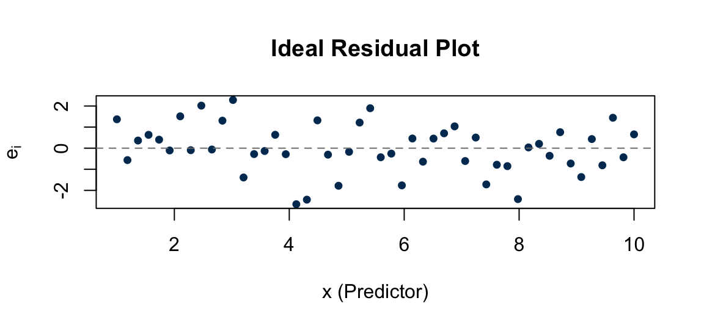

PSTAT 126: Linear Regression
UC Santa Barbara
2026-10-30
Quiz 2 Review
Midterm Review — One timed practice question per topic:
For each scenario, state which interval is more appropriate and why.
(a) A city planner wants to estimate the average daily commute time for all residents who live exactly 10 miles from the city center.
CI for \(E(Y^*)\). The planner is estimating the mean response for a population of residents at that distance, not any single individual’s commute.
(b) A transit app uses a specific commuter’s home-to-work distance to estimate that individual’s travel time tomorrow morning.
Prediction interval for \(Y^*\). The app is forecasting a single individual’s travel time, so we must account for both uncertainty in the mean and the natural variability of an individual observation.
Two 95% intervals were computed at the same value \(x^*\):
Which is the prediction interval?
Interval B is the prediction interval. A PI is always wider than the CI at the same \(x^*\) because it adds an extra \(+1\) under the square root to account for the variability of a single new observation:
\[SE_{\text{PI}} = \sqrt{\widehat{\sigma}^2\!\left(\mathbf{1} + \frac{1}{n} + \frac{(x^*-\bar{x})^2}{S_{xx}}\right)} > \sqrt{\widehat{\sigma}^2\!\left(\frac{1}{n} + \frac{(x^*-\bar{x})^2}{S_{xx}}\right)} = SE_{\text{CI}}\]
OLS and MLE produce identical estimates \(\widehat{\beta}_0\) and \(\widehat{\beta}_1\), but MLE requires \(\varepsilon_i \overset{iid}{\sim} N(0, \sigma^2)\).
What does this assumption make possible that OLS alone cannot?
The normality assumption gives the estimators exact sampling distributions, making hypothesis tests and intervals valid:
\[\widehat{\beta}_1 \sim N\!\left(\beta_1,\, \frac{\sigma^2}{S_{xx}}\right) \quad\Rightarrow\quad t^* = \frac{\widehat{\beta}_1 - \beta_{10}}{SE(\widehat{\beta}_1)} \sim t_{n-2}\]
OLS alone guarantees unbiasedness and minimum variance (Gauss–Markov) but provides no distributional results.
(a) At what stage of a regression analysis should we examine diagnostic plots, and why?
After fitting the model but before drawing inferential conclusions. Residuals are only available post-fitting, and if the plots reveal violated assumptions (nonlinearity, nonconstant variance, nonnormality), any tests or intervals computed from the model would be unreliable.
(b) What does an ideal residuals-vs-\(x\) plot look like?
Points scattered randomly around zero with no discernible trend or curvature.

A meteorologist regresses daily high temperature (\(y\), °F) on cloud cover (\(x\), hours) for \(n = 6\) days.
\[\bar{x} = 6,\quad \bar{y} = 70,\quad \widehat{\beta}_1 = -2,\quad \widehat{\beta}_0 = 82,\quad S_{xx} = 70,\quad RSS = 16\]
\[\widehat{\beta}_1 = \frac{S_{xy}}{S_{xx}} \qquad \widehat{\beta}_0 = \bar{y} - \widehat{\beta}_1\bar{x} \qquad \widehat{\sigma}^2 = \frac{RSS}{n-2} \qquad SE(\widehat{\beta}_1) = \sqrt{\frac{\widehat{\sigma}^2}{S_{xx}}} \qquad t^* = \frac{\widehat{\beta}_1}{SE(\widehat{\beta}_1)}\]
Q5. \(H_0\colon \beta_1 = 0\) (cloud cover is not a significant predictor) vs. \(H_a\colon \beta_1 \neq 0\)
Q6. Compute MSE, \(SE(\widehat{\beta}_1)\), and \(t^*\); critical value \(t_{0.025,\,4} = 2.776\).
\[\widehat{\sigma}^2 = \frac{RSS}{n-2} = \frac{16}{4} = 4 \qquad SE(\widehat{\beta}_1) = \sqrt{\frac{\widehat{\sigma}^2}{S_{xx}}} = \sqrt{\frac{4}{70}} \approx 0.239 \qquad t^* = \frac{\widehat{\beta}_1}{SE(\widehat{\beta}_1)} = \frac{-2}{0.239} = -8.37\]
Since \(|t^*| = 8.37 > 2.776\), we reject \(H_0\) at \(\alpha = 0.05\). There is sufficient evidence that cloud cover is a statistically significant linear predictor of daily high temperature.
Q7. Construct a 95% CI for \(\beta_1\). (\(t_{0.025,\,4} = 2.776\), \(SE(\widehat{\beta}_1) \approx 0.239\))
\[\widehat{\beta}_1 \pm t_{1-\alpha/2,\,n-2}\cdot SE(\widehat{\beta}_1) = -2 \pm 2.776(0.239) = -2 \pm 0.664 = \mathbf{(-2.664,\ -1.336)}\]
We are 95% confident that for each additional hour of daily cloud cover, the daily high temperature decreases by between 1.34°F and 2.66°F, on average.
Q8. Interpret \(R^2 = 0.946\).
\[R^2 = \frac{SSR}{SSTO} = 1 - \frac{SSE}{SSTO}\]
Approximately 94.6% of the variability in daily high temperature is explained by its linear relationship with daily cloud cover.
| Lecture(s) | Topic | Key ideas |
|---|---|---|
| 1–2 | SLR model & OLS | Model form, \(\widehat{\beta}_0\)/\(\widehat{\beta}_1\) formulas, interpretation |
| 3 | Properties of OLS | Linearity, unbiasedness, variance, Gauss-Markov (BLUE) |
| 4 | Residuals & \(\sigma^2\) | SSE, MSE, \(s\), SE\((\widehat{\beta}_0)\), SE\((\widehat{\beta}_1)\) |
| 5 | MLE | Same \(\widehat{\beta}\)’s as OLS; MLE of \(\sigma^2\) is biased (\(\div n\)) |
| 6 | Inference for \(\beta_1\) | \(t\)-test, CI, one- and two-sided hypotheses |
| 7 | CI vs. PI & ANOVA | Mean-response CI, prediction interval, ANOVA table, \(R^2\) |
| 8 | Diagnostics | Four residual plots, four assumptions, remedies |
| 9 | Lack of fit test | \(SSE(R) = SSPE + SSLF\); \(F^* = MSLF/MSPE \sim F_{c-2,\,n-c}\) |
A statistics instructor collects data on \(n = 8\) students, recording daily study hours (\(X\)) and quiz score (\(Y\), out of 20). The following summary statistics are computed:
\[n = 8 \qquad \sum x_i = 40 \qquad \sum y_i = 72 \qquad \sum x_i^2 = 240 \qquad \sum x_i y_i = 396\]
(a) Compute \(\bar{x}\), \(\bar{y}\), \(S_{xx}\), and \(S_{xy}\).
(b) Compute \(\widehat{\beta}_1\) and \(\widehat{\beta}_0\).
(c) Write the fitted regression equation and predict the quiz score for a student who studies 7 hours per day.
(d) Interpret \(\widehat{\beta}_1\) in context.
Continue with the study-hours data from the previous problem. After fitting the model, the residual sum of squares is \(SSE = 6.0\).
Recall: \(n = 8\), \(\bar{x} = 5\), \(S_{xx} = 40\).
(a) Compute \(\widehat{\sigma}^2 = MSE = SSE/(n-2)\).
(b) Compute \(SE(\widehat{\beta}_1)\).
(c) Compute \(SE(\widehat{\beta}_0)\).
(d) The Gauss-Markov theorem says OLS estimators are BLUE. What does BLUE stand for and what does the theorem guarantee?
A researcher regresses minutes of sleep per night (\(Y\)) on cups of coffee consumed per day (\(X\)) for \(n = 22\) participants. The R output gives:
\[\widehat{\beta}_1 = -14.2 \qquad SE(\widehat{\beta}_1) = 5.4 \qquad df = 20\]
Critical value: \(t_{0.975,\, 20} = 2.086\).
(a) Construct a 95% confidence interval for \(\beta_1\).
(b) Test \(H_0\colon \beta_1 = 0\) vs. \(H_1\colon \beta_1 \neq 0\) at \(\alpha = 0.05\). Compute \(t^*\) and state your decision.
A city models ice cream sales per hour (\(Y\), servings) as a function of air temperature (\(X\), °C). The fitted model and summary statistics are:
\[\widehat{Y} = 5 + 3X \qquad n = 20 \qquad \bar{x} = 15 \qquad S_{xx} = 200 \qquad SSE = 648\]
Critical value: \(t_{0.975,\, 18} = 2.101\).
(a) Compute a 95% CI for the mean sales when \(X^* = 17\) °C.
(b) Compute a 95% prediction interval for sales at a single future hour when \(X^* = 17\) °C.
(c) Which interval is wider and why?
A regression of \(n = 20\) observations produces the following partial ANOVA table. Fill in all missing values, compute \(R^2\), and draw a conclusion.
| Source | df | SS | MS | F |
|---|---|---|---|---|
| Model | 1 | 360 | ? | ? |
| Error | ? | 90 | ? | |
| Total | ? | ? |
Critical value: \(F(0.95;\; 1,\; 18) = 4.41\).
(a) Complete the ANOVA table.
(b) Compute \(R^2\) and interpret it.
(c) State the conclusion of the F-test at \(\alpha = 0.05\).
For each residual plot description below, state (i) which SLR assumption is violated and (ii) what you would do to address it.
(a) The residual-vs-fitted plot shows a clear U-shaped curve. Residuals are positive at low and high fitted values, negative in the middle.
(b) The residual-vs-fitted plot shows a funnel/fan shape. Residuals spread out as fitted values increase.
(c) The normal Q-Q plot shows points that curve upward at the right tail (right skew).
An experiment has \(c = 4\) distinct \(X\) values with \(n_j = 3\) replicates each (\(n = 12\)). After fitting the linear regression and the full ANOVA model:
(a) Compute \(SSLF\) and its degrees of freedom.
(b) Compute \(MSLF\) and \(MSPE\).
(c) Compute \(F^*\) and state whether you reject the linear model at \(\alpha = 0.05\). Critical value: \(F(0.95;\; 2,\; 8) = 4.46\).
(d) What does this result tell you about Assumption 1?
Key reminder: Bring a charged, working calculator and your Access Card. A formula sheet will be provided.
The midterm covers Lectures 1–9.
PSTAT 126 — Fall 2026 · UC Santa Barbara